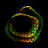

Place ObjectPlace Object visualises the spatial distribution of subtomograms within a tomogram. A geometric object (or a custom surface) is translated and rotated according to the position and orientation stored for each particle in a TOM/AV3 motive list, and displayed in the same coordinate space as the tomogram. This is a ChimeraX port of the UCSF Chimera plugin described in Qu K. et al. (2018) PNAS 115:E11751–E11760.
Open the tool from Tools → Volume Data → Geopickr and use its Place Object tab (or run the command described below). Each motive list is shown as a single ChimeraX surface model whose particles are drawn as instances, so even lists with many thousands of particles display efficiently.
Click Open motive list... to read a .em file. The list at
the top shows every loaded motive list; selecting one shows its controls below.
Close removes the selected model.
A motive list is a (20, N) matrix following the TOM/AV3 convention. The rows used by Place Object are:
| Row | Meaning |
|---|---|
| 1 | Cross-correlation coefficient (CCC) |
| 8–10 | X/Y/Z coordinate in the full tomogram |
| 11–13 | X/Y/Z shift within the subvolume |
| 17–19 | Phi / Psi / Theta Euler angles (ZXZ, degrees) |
| 20 | Class number |
.em motive list.placeobject file [shape shape-name] [voxelSize s] [zOffset z] [phiOffset deg]
Opens the motive list file, places the chosen object at every particle, and opens the Place Object tool. Example:
placeobject ~/data/particles.em shape ArrowZ voxelSize 4.4